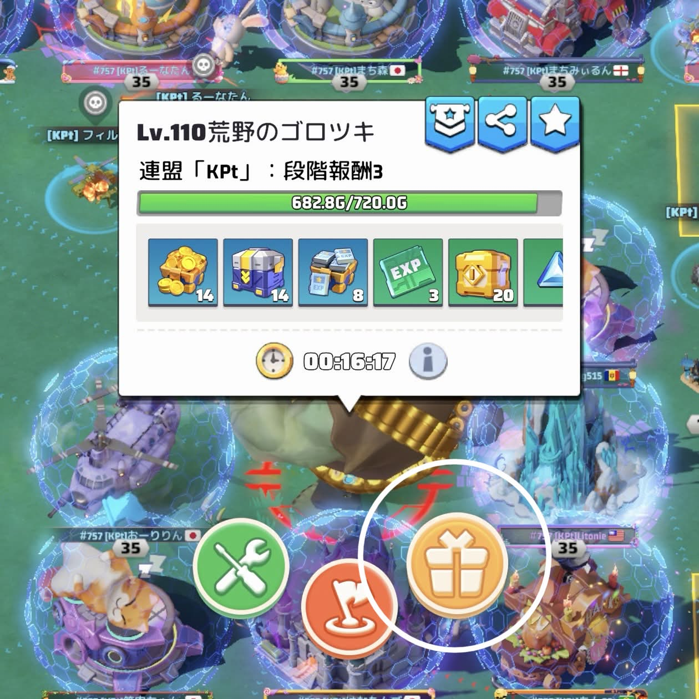
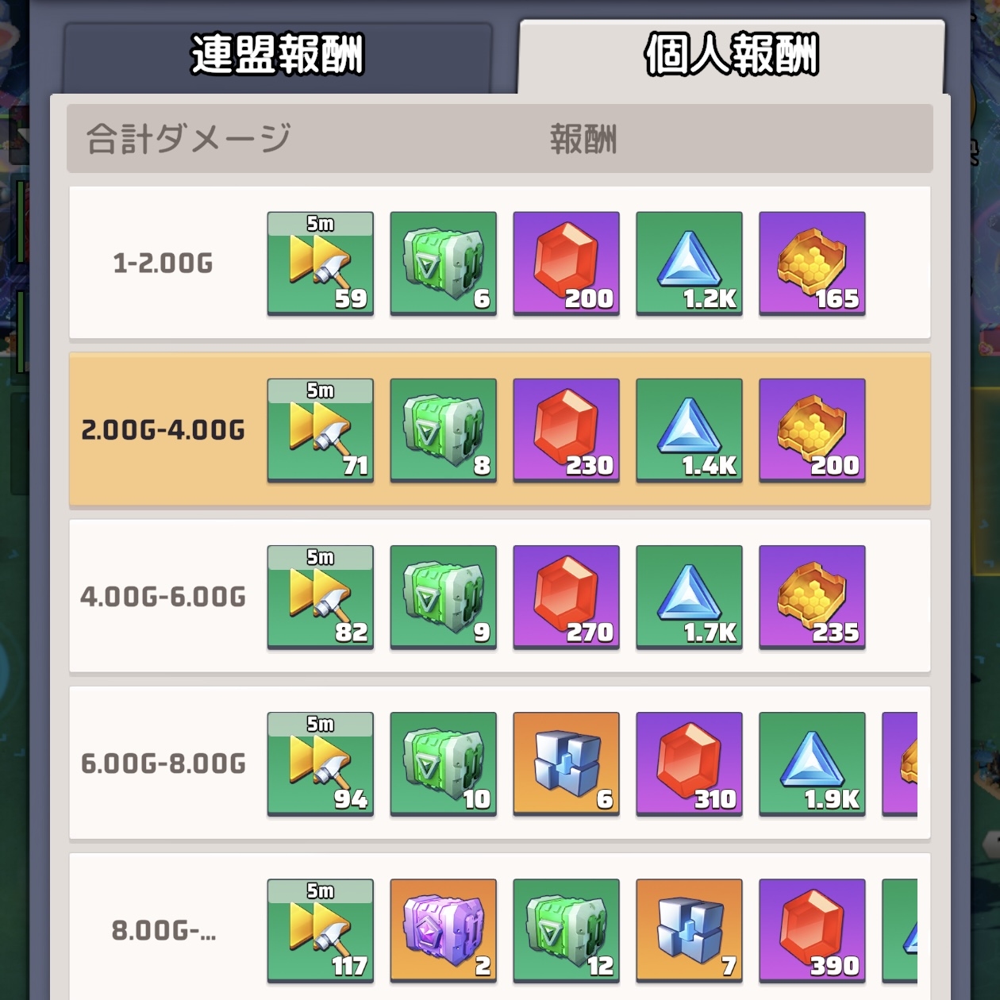

「演習」イベントについてもう一度おさらいしよう
「演習」って何だっけ？
30分以内に標的により多くのダメージを与えるイベントです。
与えたダメージによって「連盟報酬」と「個人報酬」のふたつが貰えます！うれしい！
- 連盟報酬…全員で与えたダメージの合計。全5段階。
- 個人報酬…個人で与えたダメージの合計。全5段階。
連盟の人数も多く、戦力が高い人の支えもあるので「連盟報酬」は割とあっさり5段階目までいくことが多いのですが、戦力が整わないうちは「個人報酬」のハードルは結構高かったりします！
ポイントを抑えて、少しでも上の個人報酬を目指してみましょう！


【ポイント1】幹部の集結に乗ってみよう！
実は、R5,R4の集結には与ダメージ増加のオマケ効果がついています。
（ちなみに演習地点の周辺を幹部で囲んでいるのはそんなお得な幹部の集結を効率よく回すためです）
【ポイント2】偵察をしよう！
基地を偵察して「戦闘狂」状態になると、自分の与ダメージが増加します。
「偵察～」とか言って連チャで基地の座標を共有してくれる人がいますが、これが理由。
間違ってアクティブな連盟の基地を偵察すると叱られるので注意！共有してもらった基地を偵察するのが無難です！
【ポイント3】ログインして参加しよう！
「自動集結」をオンにしておくと、オフラインでも参加扱いになって「連盟報酬」は貰えるのですが、この「自動集結」って兵士のほとんど乗らないとても弱い部隊での集結なので上位の「個人報酬」はほぼもらえません！
時間の都合がつくならば、ログインしてリアルタイムに手動で集結に乗るのが一番！
最後に
演習は基本的に21:30からの開催なので、生活リズム的に参加が難しい場合もありますよね…そこはごめんなさい🙏
もし参加できそうならちょっと頑張ってみて「今回は3段階目だったから次回は4段階目を目指そう！」なんて目標を設定するのも素敵です！